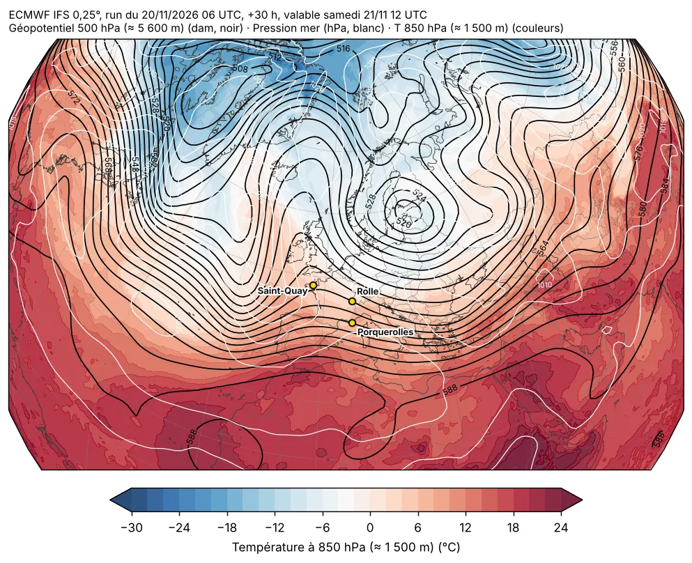
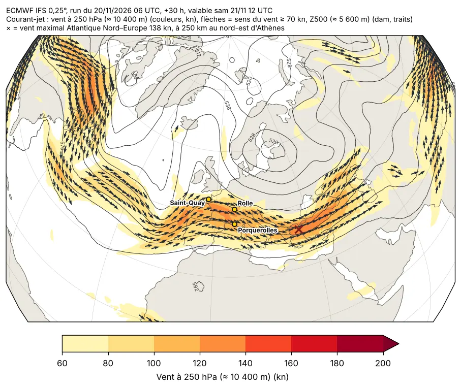
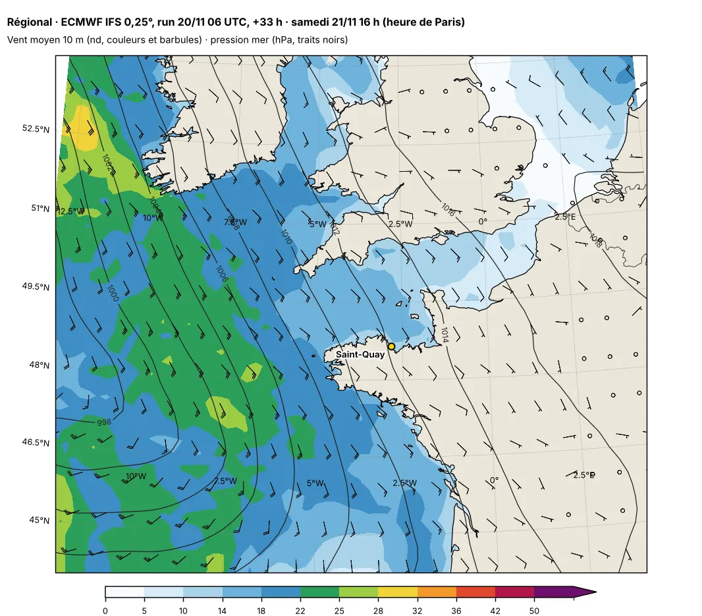
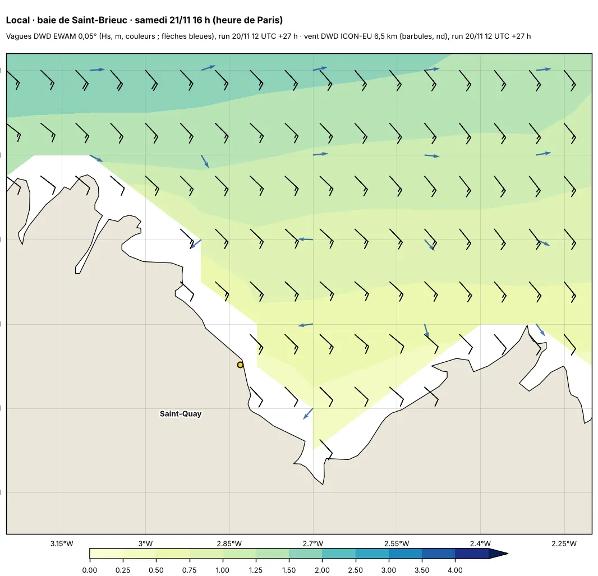
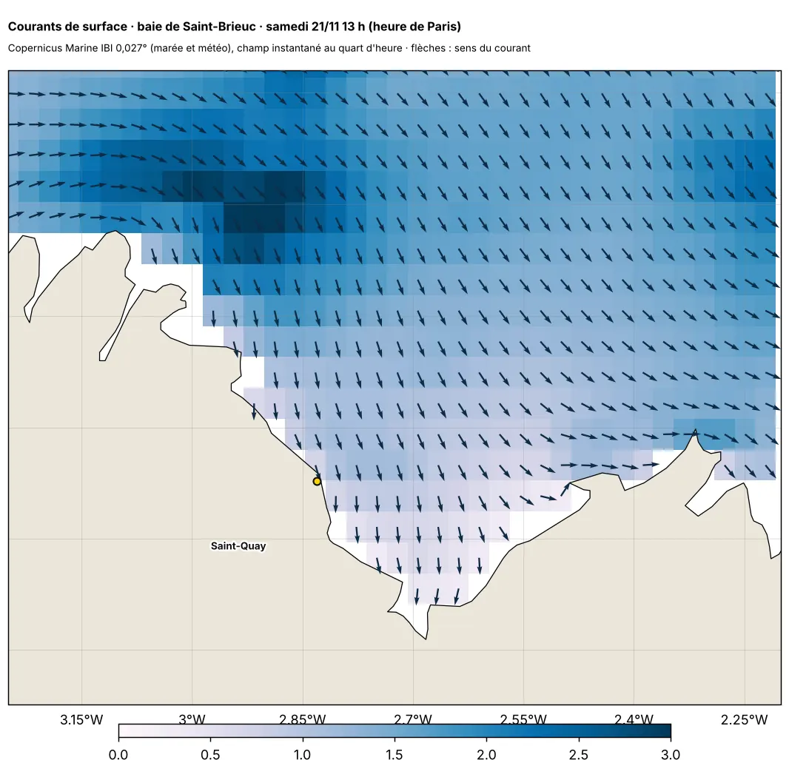
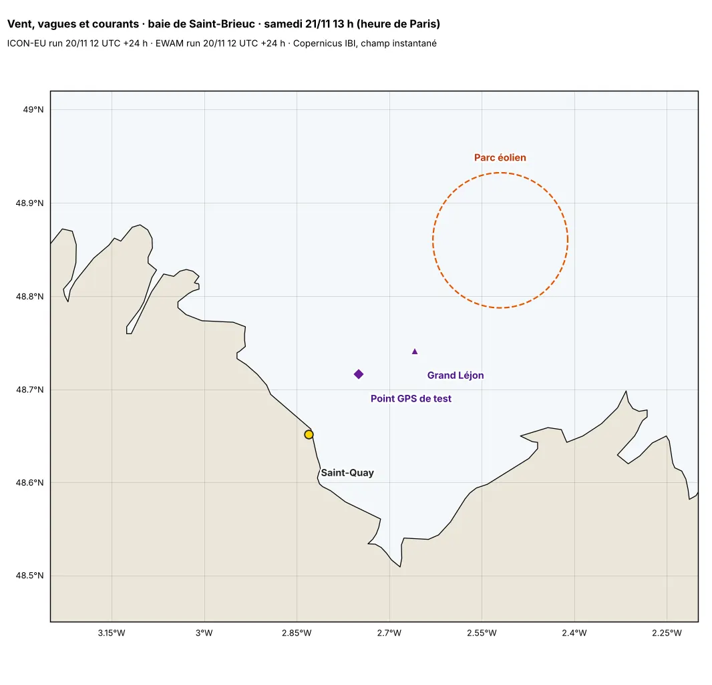
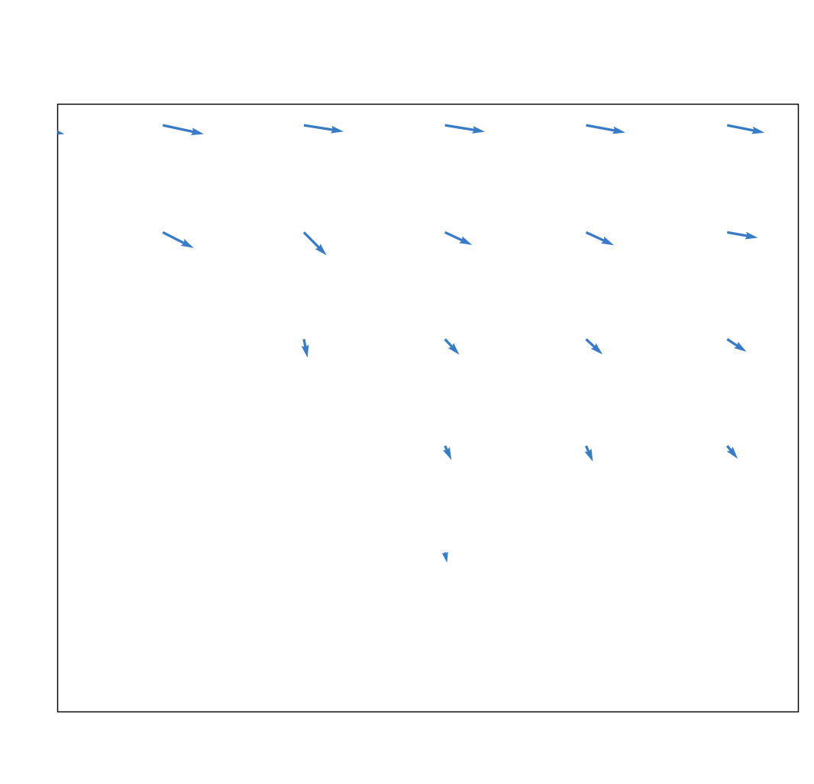
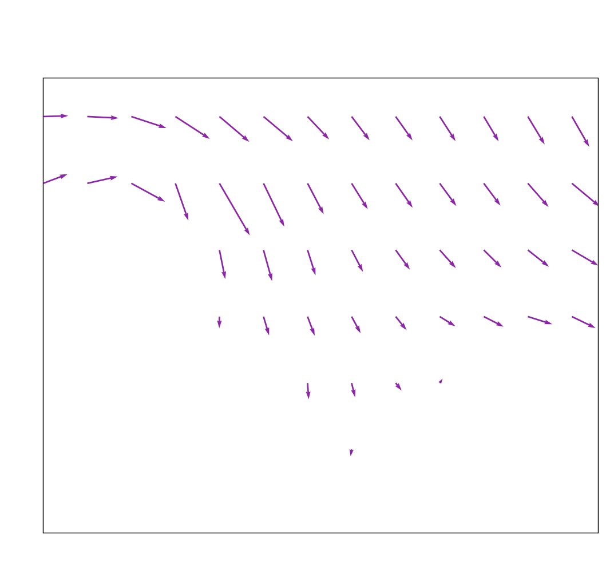
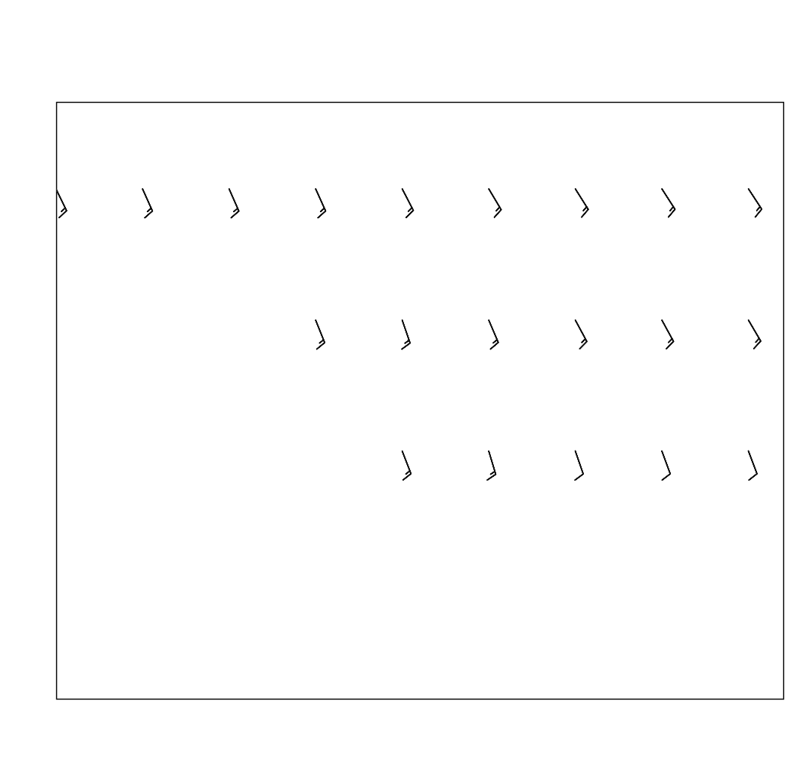
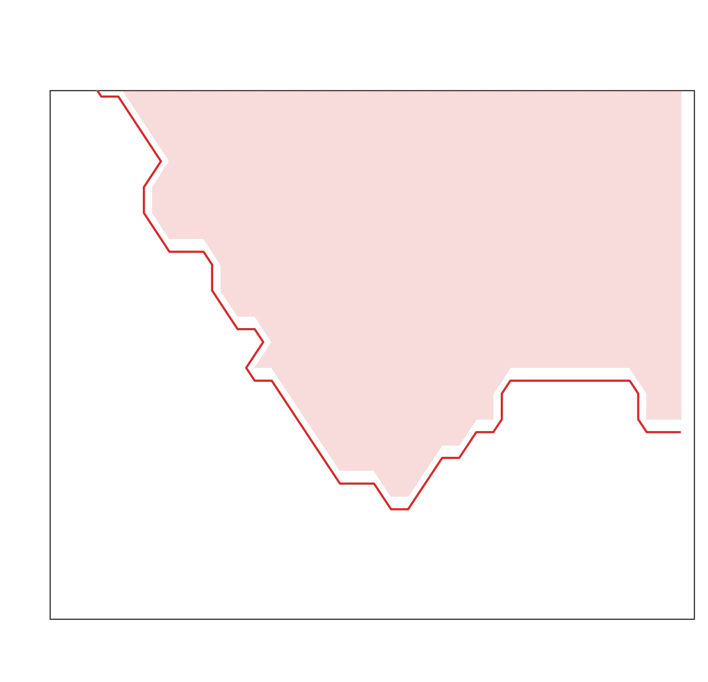

Copie hors ligne gardée dans NavIn, analyse du 20/11/2026 à 23 h 00 (heure de Paris), runs ECMWF IFS 20/11 06 UTC, DWD ICON-EU et EWAM 20/11 12 UTC, Copernicus IBI 20/11. Au-delà de 24 h elle est ancienne : version à jour en ligne.
Zone Atlantique · 48°39,126' N 002°49,838' W
Analyse Saint-Quay-Portrieux, de l'hémisphère à la baie
Situation du vendredi 20 novembre 2026 au soir, pour les sorties de samedi 21, dimanche 22 et lundi 23. Bateau : Dufour 445 Grand Large, seuils de référence au près. Runs : ECMWF IFS 20/11 06 UTC, DWD ICON-EU et EWAM 20/11 12 UTC, cartes DWD 20/11 00 et 12 UTC.
Touchez une carte pour l'ouvrir en plein écran.
L'essentiel
Samedi 21 : go. Une dorsale passe au-dessus de la Bretagne nord. En baie, vent d'est-sud-est faible à modéré (7 à 16 nd), mer belle à peu agitée.
Dimanche 22 : no-go. Un thalweg arrive de l'Atlantique avec un front occlus sur la Manche. Vent d'ouest jusqu'à 23 nd et rafales à 36 nd (ECMWF) ; ICON-EU donne jusqu'à 32 nd et 53 nd en rafales au nord-ouest de la baie. Les deux modèles ne placent pas le front à la même heure : incertitude sur le timing.
Lundi 23 : go. Retour d'un flux d'ouest à nord-ouest modéré (12 à 19 nd, rafales 26 nd selon ECMWF ; ICON-EU plus faible), mer qui retombe, jet de nouveau à 150 km. Courant de flot jusqu'à 1,7 nd vers 15 h, dans le sens du vent.
Jour
Feu
Vent moyen (nd)
Rafales (nd)
Hs (m)
Beaufort / Douglas
ven. 20
Prudence
19
26
0,9
5 / 3
sam. 21
Go
16
24
0,4
4 / 2
dim. 22
No-go
23
36
0,8
6 / 3
lun. 23
Go
19
26
0,5
5 / 3
Jour
Feu
Vent moyen (nd)
Rafales (nd)
Hs (m)
Beaufort / Douglas
Valeurs maximales de 8 h à 18 h au port (ECMWF IFS, vagues DWD EWAM), règles go/no-go de NAVIn. Même calcul que dans NAVIn, Météo › Go / no-go.
1. Hémisphère Nord ≈ 10 000 km
Samedi midi, une dorsale traverse la France du sud au nord, son axe passe au-dessus de Saint-Malo, à une centaine de kilomètres de Saint-Quay : temps calme. Derrière, un thalweg se creuse à 900 km à l'ouest de La Corogne et avance vers l'est ; il atteint la Manche dimanche. Au sol, la dépression principale est à 800 km au sud de Reykjavik (989 hPa), l'anticyclone à 800 km à l'ouest des Açores (1 026 hPa).

ECMWF IFS 0,25°, run 20/11 06 UTC +30 h, samedi 21/11 12 UTC. 500 hPa (≈ 5 600 m) en noir (dam), pression mer en blanc (hPa), 850 hPa (≈ 1 500 m) en couleurs (°C).
Courants-jets à 250 hPa (≈ 10 400 m)
Samedi, le jet passe juste au-dessus de Saint-Quay : 78 nd en altitude. Dimanche, il glisse à 350 km au sud-ouest (80 nd vers Nantes) et il ne reste que 15 nd au-dessus du port. Ce jet guide le thalweg et le front de dimanche. Lundi, il remonte un peu : 51 nd au-dessus du port, le cœur (86 nd) à 100 km à l'ouest de Nantes, puis il file vers la Méditerranée.

ECMWF IFS, run 20/11 06 UTC, vent à 250 hPa (≈ 10 400 m) en nd.
2. Atlantique et Europe ≈ 3 000 km
Cartes officielles du DWD, non modifiées. Dimanche midi, le front occlus de la dépression irlandaise s'étire de la mer d'Irlande à la Manche et à la France, avec un petit minimum de 1 005 hPa sur la France. Un anticyclone (H) reste au large du Portugal.
DWD ICON, 500 hPa (≈ 5 600 m, dam) et pression mer (hPa) : 22/11 00 et 12 UTC, 23/11 00 et 12 UTC. Calques posés par-dessus : les trois zones d'essai, et en couleur les éléments détectés sur ECMWF IFS (run 20/11 06 UTC) aux mêmes heures.
3. Manche et golfe de Gascogne ≈ 1 000 km
Samedi après-midi, le vent reste sous 18 nd sur toute la Manche ouest ; le plus fort (28 nd) est à 200 km à l'ouest de Cork. Dimanche après-midi, la dépression (1 002 hPa) est à 100 km au sud de Cork et la Manche passe en vent d'ouest de 25 à 39 nd, au-delà du seuil rouge du Dufour au près. Lundi après-midi, il ne reste qu'un petit creux (1 018 hPa) au-dessus de Saint-Malo : vent de nord-ouest de 10 à 18 nd sur la Manche ouest, le plus fort (26 nd) à 150 km à l'ouest de Cork. Le trait orange marque 18 nd, le rouge 25 nd, le violet pointillé des rafales de 35 nd.

ECMWF IFS 0,25°, run 20/11 06 UTC (+33 h, +57 h et +81 h). Vent moyen à 10 m en nd (couleurs et barbules), pression mer en hPa. Seuils et maximum calculés en mer seulement.
4. Baie de Saint-Brieuc ≈ 70 km
Samedi 16 h, en mer dans la baie : vent de 10 à 18 nd, rafales jusqu'à 24 nd, Hs de 0,3 à 1,7 m (le plus fort au nord-ouest, vers Bréhat). Dimanche 16 h : Hs de 0,6 m près de la côte à 3,6 m au large du nord-ouest, avec plus d'un mètre déjà au point GPS de test et dans le parc éolien. Lundi 16 h : la mer retombe (Hs de 0,4 à 1,7 m, moins de 1 m au point de test) ; ICON-EU ne donne que 3 à 10 nd de nord-ouest dans la baie, rafales 17 nd, alors qu'ECMWF garde 12 à 14 nd au port.
Les modèles ne sont pas d'accord dimanche
À 16 h, ECMWF donne un vent d'ouest de 21 nd au port. ICON-EU a déjà fait passer le front : vent de nord-nord-ouest d'environ 12 nd au point de test, mais 32 nd et des rafales à 53 nd au nord-ouest de la baie. Le timing du front décide de la journée : à revoir avec le run de samedi matin et le BMS en cours.

Vagues DWD EWAM 0,05° (Hs en m, flèches dans le sens de propagation), run 20/11 12 UTC. Vent DWD ICON-EU 6,5 km (barbules, nd), run 20/11 12 UTC, en mer seulement. Annotations : Hs 1 m et 2 m, parc éolien (alerte fixe de NAVIn), Grand Léjon, point GPS de test.
5. Courants en baie ≈ 70 km
Le flot porte au sud-est vers le fond de la baie, le jusant au nord-ouest. Au point GPS de test, le courant atteint 1,2 nd samedi vers 13 h 45 et 1,5 nd dimanche vers 14 h ; il dépasse 2 nd dans le parc éolien dimanche. Lundi, il atteint 1,7 nd vers 15 h, dans le sens du vent. En fond de baie, devant Saint-Quay, il reste sous 1,5 nd.
Moment
Courant au point de test (nd, vers)
Vent ECMWF (nd, du)
Effet
sam. 21, 12 h à 15 h
0,6 à 1,2 · SSE
11 à 14 · SE
vent contre courant : mer courte, sans gravité
dim. 22, 8 h à 11 h
0,5 à 1,1 · NO
14 à 19 · OSO
courant de travers au vent
dim. 22, 13 h à 16 h
0,9 à 1,5 · SE
20 à 23 · O
courant plutôt avec le vent
lun. 23, 14 h à 17 h
0,8 à 1,7 · SE
12 à 14 · NNO
courant avec le vent
Moment
Courant au point de test (nd, vers)
Vent ECMWF (nd, du)
Effet

Copernicus Marine IBI 0,027° (marée et météo), champ instantané au quart d'heure, prévision du 20/11. Vitesse en nd, flèches dans le sens du courant. Annotations : vitesse aux points, et en rouge les zones où le vent ECMWF de l'heure souffle contre le courant (écart de plus de 135°, courant d'au moins 0,5 nd). Près de la côte, la grille du modèle ne donne pas de valeur. Les heures de pleine et basse mer restent à lire dans l'annuaire du SHOM.
6. Vent, vagues et courants ensemble ≈ 70 km
Les trois couches sur le même fond, à l'heure du flot de chaque jour. Le fond est seul au départ : ajoutez les couches une à une pour voir comment elles se croisent.
Heure (Paris)
Vent ICON-EU (nd, du)
Vagues EWAM (Hs m, de)
Courant IBI (nd, vers)
Ce que ça donne
sam. 21, 13 h
13 · SSE (150°)
0,6 · N (358°)
1,1 · SSE (151°)
vent contre courant sur presque toute la baie : mer courte et clapot, sans danger à cette force
dim. 22, 14 h
31 · ONO (294°)
1,3 · ONO (297°)
1,5 · SSE (147°)
vent, vagues et courant vont dans le même sens : la mer s'allonge, mais le vent seul suffit pour le no-go
lun. 23, 15 h
7 · OSO (247°)
0,7 · N (341°)
1,7 · SSE (151°)
peu de vent, houle résiduelle du nord, courant fort : le courant mène la route
Heure (Paris)
Vent ICON-EU (nd, du)
Vagues EWAM (Hs m, de)
Courant IBI (nd, vers)
Ce que ça donne
Valeurs au point GPS de test (48° 43' N 2° 45' W).





Vent DWD ICON-EU 6,5 km et vagues DWD EWAM 0,05° (runs 20/11 12 UTC), courants Copernicus Marine IBI 0,027° (champ instantané). Flèches de vagues dans le sens de propagation, plus longues quand Hs est plus grande ; flèches de courant dans le sens du courant, plus longues quand il est plus fort. Annotations : en rouge, vent contre courant (écart de plus de 135°, courant d'au moins 0,5 nd, vent d'au moins 8 nd) ; en orange, vagues contre courant (Hs d'au moins 0,5 m).
Bulletin côtier et BMS : je ne peux pas les lire d'ici, consultez la version en cours sur Météo-France marine.
Open-Meteo était à sa limite journalière ici : ce sont les fichiers bruts ECMWF et DWD qui ont servi. Sur votre appareil, NAVIn passe par Open-Meteo.
Sources : ECMWF open data (IFS 0,25°), DWD opendata (ICON-EU, EWAM, cartes officielles), Copernicus Marine Service (IBI, courants). Cartes et chiffres calculés par des scripts ; texte rédigé par une IA.